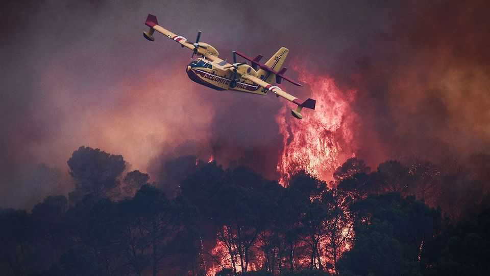

Europe’s fires are just the start
They are not a new normal. But worse can nonetheless be expected

Jul 30th 2026
From 2006 to 2025 the total area burned by fires in France every year averaged some 15,000 hectares—a bit smaller than Washington, DC. By July 28th, the fire to the west of Bordeaux which started just six days earlier had burned almost three times that. Meanwhile, some 500km to the south, savage fires advanced perilously close to Madrid. More than 300,000 people have been evacuated.
These fires may end up being the worst that Europe sees this summer. But do not bank on it. A series of heatwaves has left lots of places desiccated and flammable—and more hot weather is to come. Last year the European Union saw more than 1m hectares burn; this year could break that record.
And it is not just one summer. The continent is heating up faster than any other. Because it has decades of worsening hazards ahead, it needs to get ready.
The rest of the world is not far behind. Wildfires are not purely a matter of climate, but climate does matter. The frequency and extremity of fire-friendly weather have been increasing for 40 years; conditions very unlikely before climate change are becoming increasingly common. Measured against a definition of extreme fires that combines size and intensity, the past decade has been particularly bad.
In a world that is about 0.5°C (0.9°F) above the average temperature of the first decades of this century (and thus about 1.5°C above that of the 19th century), fire risks are projected to increase across 88% of the planet’s fire-prone area—pretty much everywhere that is not a desert or an ice sheet. The increase from 1.5°C to 2°C raises the risks by even more.
This will bring more heroism, more concerned politicians being briefed by begrimed firefighters, more disrupted lives, more destruction and destitution. It will also greatly increase the risks from wildfires’ less obvious, but more baleful, effects on the lungs of people who never come even within a thousand kilometres of the flames.
Most of the deaths associated with wildfires come from smoke inhalation. The wind-blown particles that choked cities in Canada and the United States alike in the middle of July will have shortened hundreds or thousands of lives. Smoke from fires in Indonesia is estimated to have killed 100,000 people in 2015. Something similar is all too likely there this year. Demand for biofuels in a world of pricey oil leads to the destructive slash-and-burn agriculture at the heart of the problem, and a strengthening El Niño will promote fire weather across the region in the months to come, as happened in 2015.
Projections on the basis of a fairly moderate emissions scenario—and taking account of the ageing global population—suggest that deaths from wildfire smoke, estimated at 240,000 a year in the 2010s, will reach 1.4m a year by the end of the century. A recent study suggested up to 30,000 excess deaths a year from wildfire smoke in America by 2050. That would put all other direct climate impacts in the shade.
Firefighting is, to some extent, like fighting wars; if the enemy attacks more frequently and with greater ferocity, you need greater force on your side. So places that have not previously felt threatened need to up their game. They may also wish to bring new technologies into play. Satellites can spot fires almost as soon as they start—intelligence which could sometimes prove crucial, provided systems are capable of acting on it. Drones will doubtless have a role. Allies can help, too. Europe has pooled firefighting resources now being deployed in Spain and France; Mexico is helping Canada.
Being better at fighting fires, though, is not enough. The greatest benefits will come from being better at preventing them and living with their effects. The diktats of danger and urgency tend to mean fire-suppression eats into budgets for managing landscapes, teaching the public about when to filter the air or how to protect a house, and so on. No such projects are ever needed in the same way as a planeload of cold water on a fire-front. But they are vital nonetheless.
The fires in France and Spain are not, as some say, the new normal. Fire is capricious. It does not repeat itself from one year to the next. But this year’s fires are firmly within the limits of the new possible—and the extremities of that new possible have yet to be mapped. ■